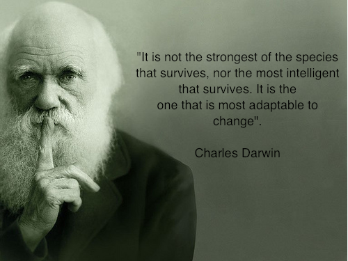

<!DOCTYPE html>
<html>
<head>
<meta name="viewport" content="initial-scale=1.0, user-scalable=no" charset="utf-8"/>
<style type="text/css">
  html { height: 100% }
  body { height: 100%; margin: 0px; padding: 0px }
  #map_canvas { height: 100% }
</style>
<script type="text/javascript"
    src="https://maps.google.com/maps/api/js?sensor=false">
</script>

<script type="text/javascript">
var map;
var marker;
var infowindow;   //Global infowindow created
function initialize() {
  var latlng = new google.maps.LatLng(42.098687,-75.917974);
  var restaurants = new Array();
  restaurants = [ 
         new google.maps.LatLng(42.898687,-75.917974),
         new google.maps.LatLng(42.698687,-73.917974),
         new google.maps.LatLng(42.198687,-75.917974),
         new google.maps.LatLng(41.098687,-75.917974)
         ];
   var myOptions = {
      zoom: 3,
      center: latlng,
      mapTypeId: google.maps.MapTypeId.ROADMAP
    };
    map = new google.maps.Map(document.getElementById("map_canvas"),
        myOptions);

    var showImage = "" + "<br/><br/><center>这里再添加微博内容！</center>";
    infowindow = new google.maps.InfoWindow({   //infowindow options set
               content: showImage,
               size: new google.maps.Size(50, 20)
    });

    var i = 0; 
    for ( i <0; i < restaurants.length;i++ ){          
          marker = new google.maps.Marker({
                      position: restaurants[i],
                      map:map,
                      title:"Testing!",
               });
           popupDirections(marker);
    }
}

function popupDirections(marker) {
  //this function created listener listens for click on a marker
  google.maps.event.addListener(marker, 'click', function() {
    infowindow.open(map,marker); //then opens the infowindow at the marker
  });
}

</script>

</head>
<body onload="initialize()">
  <div id="map_canvas" style="width:100%; height:100%"></div>
</body>
</html>